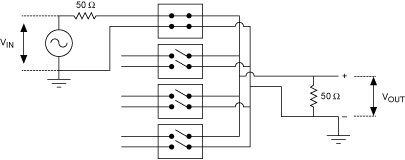
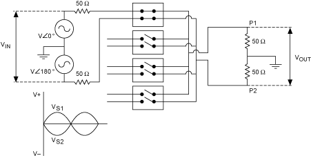
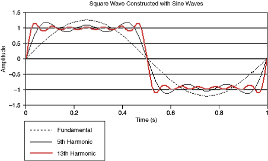
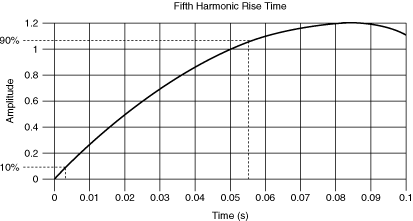

信号带宽是开关的有用信号频率范围。NI 开关模块被指定用于低至 DC 的频率，因此带宽被指定为最大推荐信号频率。在许多情况下，带宽是开关可以保持 <3 dB插入损耗的最高信号频率。一些射频模块基于反射 ( VSWR ) 而不是插入损耗来指定带宽。
当高频信号穿过开关模块时，它会因串联电阻、介电吸收和阻抗失配的反射而衰减。这种衰减称为插入损耗。开关模块输出端剩余的信号量表示为与输入信号的比值，以分贝 (dB) 为单位：
发射信号 (dB) = 10 log(P out /P in )
其中P out是输出功率电平，P in是输入功率电平。
这个比率也可以用信号电压来表示：
发射信号 (dB) = 20 log(V out /V in )
由于开关衰减信号，输出幅度小于输入幅度，传输信号比始终<0 dB。
按照惯例，插入损耗是输入信号与输出信号的比率，以分贝 (dB) 为单位：
插入损耗 (dB) = 10 log(P in /P out ) = -10 log(P out /P in )
插入损耗 (dB) = 20 log(V in /V out ) = -20 log(V out /V in )
输出幅度小于输入幅度，因此插入损耗>0 dB。
串联电阻、介电损耗和失配反射的影响因素与频率有关，通常会导致插入损耗随信号频率上升。
下图分别说明了单端和差分测量。
|  |
|  |
如果信号是纯正弦信号，则可以直接应用开关模块的带宽/插入损耗额定值。对于具有多个频率成分的信号，例如方波，可能难以应用该等级。
方波可以使用自然谐波级数来表示，其中仅使用奇次谐波。构成理想方波的频率分量是无限的。
方波 (t) = (4/ )[sin t + (1/3)sin 3 t + (1/5)sin 5 t + …]
哪里是每秒弧度的频率
方波的基频可能低于额定带宽。但是，超过额定值的谐波可能会因插入损耗的增加而衰减。
例如，考虑一个 2 V 峰峰值方波。方波可以近似为多个谐波正弦波的总和。下图中显示了三个谐波：基频（或一次谐波）、5 次谐波和 13次谐波。
|  |
If the frequency content of a square wave is known, the required switch bandwidth can be determined based on the highest harmonic to be passed with minimal distortion.
If the frequency content is unknown, the –3 dB point can be approximated using the rise time of the harmonic to be preserved. The rise time is related to the –3 dB point bandwidth by the following approximation:
3 dB bandwidth (Hz) ≈ 0.35/τr
where τ is the rise time from 10% to 90% of the signal amplitude.
The following figure shows this approximation applied to the fifth harmonic of the square wave from the previous example:
|  |
where τ = 0.0515 s
3 dB bandwidth = 6.79 Hz
To preserve the rise time of the signal, a switch with an insertion loss of 3 dB at 6.79 Hz minimum should be chosen.
For a square wave, once the fifth or seventh harmonic is reached, the change in the rise time is minimal. In the previous example, a switch with an insertion loss of 3 dB at 7 Hz will be sufficient to pass as a 1 Hz square wave.
|
Tip For square wave signals, select a switch with a –3 dB point at a frequency seven times the fundamental frequency of the square wave. If less attenuation is desired, the –3 dB point should be a higher frequency. |
 Submit feedback on this topic.
Submit feedback on this topic. Visit ni.com/support for technical support.
Visit ni.com/support for technical support.